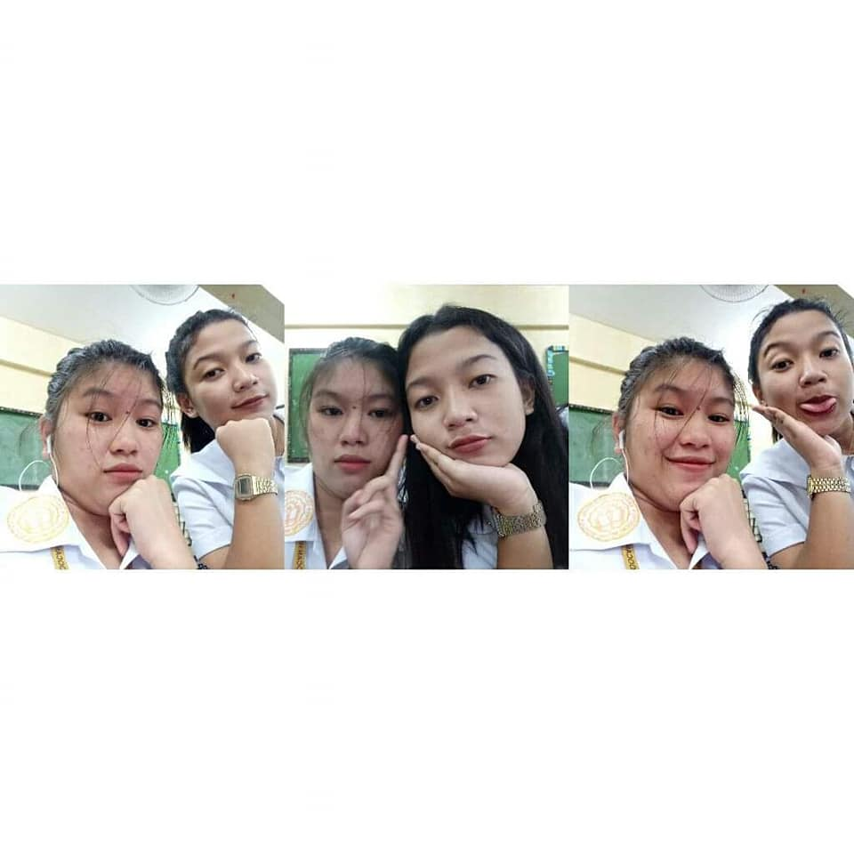
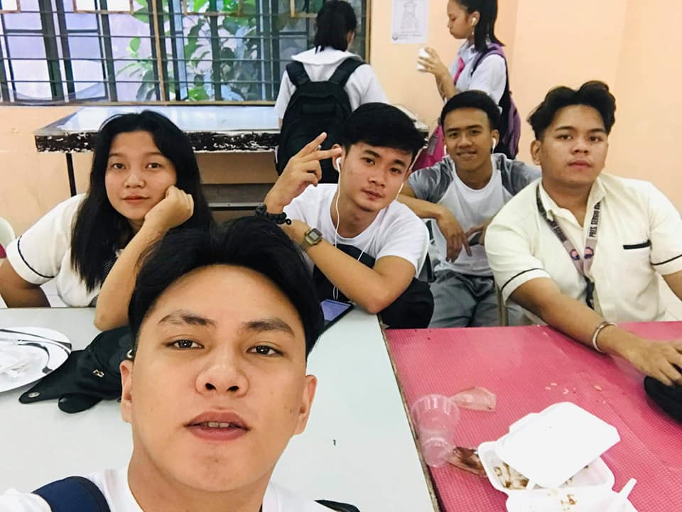
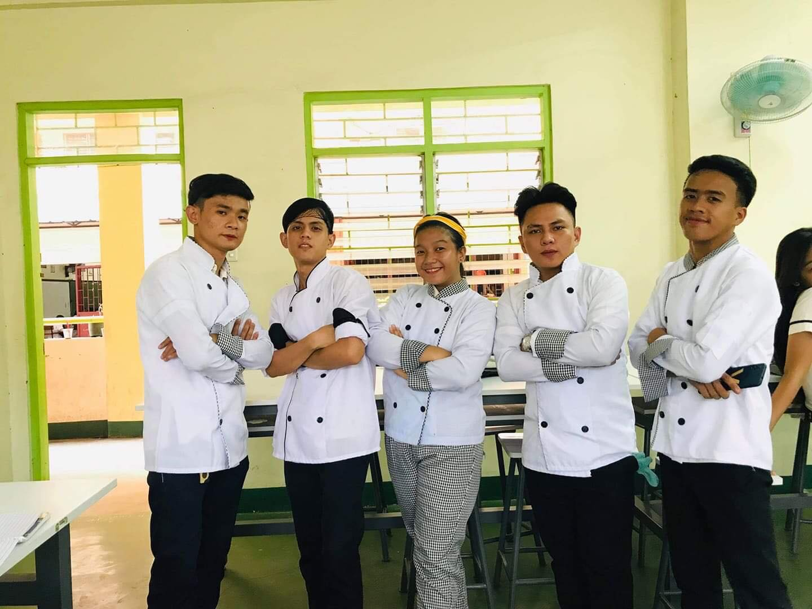

   High School Days this was also a very memorable from me, this was the first time I learned how to use phones, learn to sneaking a text during a But there’s also a downfall was when you got caught teachers kept your phone for the entire day, or worse, brought it to the principal’s office. This was also the first time to make group projects that’s why my groups Is also my friends, so that could joke around the entire class before trying to scruff something together in the last five minutes. I also joined a field trip annually.